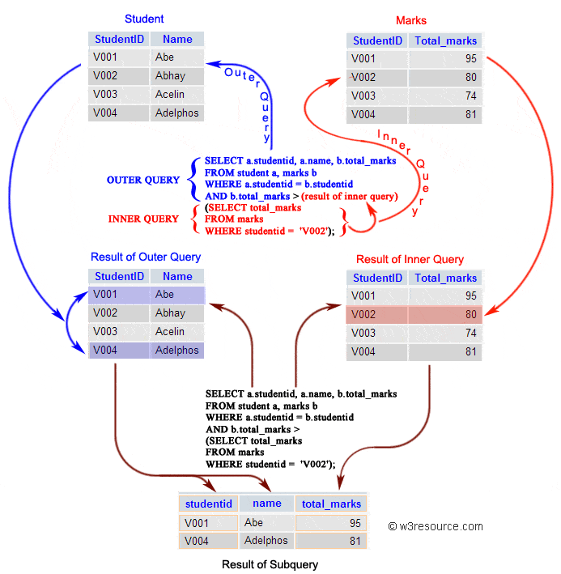
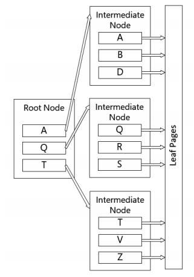

1. SQL cơ bản
1.1. Giới thiệu về SQL
SQL là viết tắt của Structured Language Query, là một ngôn ngữ truy vấn, xử lý và làm việc với database.
SQL được cấu thành từ 3 nhóm câu lệnh lớn:
Data Manipulation Language (DML): Select, Insert, Update, Delete
Data Definition Language (DDL): Create, Alter, Drop
Data Control Language (DCL): Grant, Revoke & Deny
Tuy nhiên, nếu chia theo các câu lệnh để ứng dụng trong phân tích dữ liệu, có 3 nhóm sau.
Nhóm câu lệnh truy vấn, tổng hợp dữ liệu: Cho phép truy vấn, tổng hợp dữ liệu nhưng không làm thay đổi dữ liệu đang có trong database. Các nhóm này gồm:
Nhóm truy vấn: Select, Where, Join
Nhóm tổng hợp: Yêu cầu cần có hàm tổng hợp dữ liệu (aggregate functions) và nhóm hàm
group by
Nhóm câu lệnh làm thay đổi cơ sở dữ liệu: Cho phép thay đổi, điều chỉnh dữ liệu đang có trong database.
Alter
Update
Insert
Delete
Các nhóm câu lệnh kiểm tra, phân quyền người dùng: Grant, Revoke, Deny
Ngoài ra, SQL còn rất mạnh trong việc đặt job, xây dựng các câu lệnh tự động với exec, xây dựng các hàm (functions) và thủ tục (procedure) trong hệ thống.
Để học và ứng dụng tốt SQL, nên đi theo lộ trình sau.
Các nhóm câu lệnh truy vấn: Select, Join, Where, Group By, Pivot, Unpivot,
Sub Query
Nhóm câu lệnh biến đồi: Alter, Update, Insert, Delete
Các nhóm câu lệnh làm việc với chuỗi (string), thời gian (date)
SQL động
Vòng lặp
Đặt job
Ngoài ra, khi làm việc với các ngôn ngữ phân tích dữ liệu như R hoặc Python, cần nắm vững cách thức truy vấn dữ liệu từ SQL sang các công cụ phân tích.
1.2. Các nhóm câu lệnh truy vấn, tổng hợp
Cách viết comment: Sử dụng dấu -- hoặc trong block /*.....*/
Khái quát các câu lệnh truy vấn trong SQL
Các câu lệnh SQL diễn ra theo thứ tự sau:
SELECT >> FROM >> WHERE >> GROUP BY >> HAVING >> ORDER BY
SELECT
[DISTINCT][TOP (n)] *, columns, or expressions
[FROM data source(s)]
[JOIN data source
ON condition](may include multiple joins)
[WHERE conditions]
[GROUP BY columns]
[HAVING conditions]
[ORDER BY Columns];
/*
Cách 1: This is
my block of comment
*/
--Cách 2
--Khó dùng hơn
1.2.1. Select
Lưu ý: Các bảng thường bắt đầu bằng .dbo, gọi là schema. Thông thường, schema này là default. Tuy nhiên, nếu DB admin đổi schema, ta cần phải đổi câu lệnh
Lấy tất cả các biến
---Cách 1
select * from AdventureWorksDW2012.dbo.DimCustomer
---Cách 2
select * from AdventureWorksDW2012..DimCustomer
---Cách 3: Khai báo DB với use
use AdventureWorksDW2012
select * from DimCustomer
Lấy top n dòng đầu tiên hoặc n phần trăm đầu tiên
select top 5 * from learnsql.dbo.product
select top 50 percent * from learnsql.dbo.product
Lấy một vài biến
--Cách 1
select Product_CD, Date_offered from learnsql.dbo.product
-- Cách 2
select A.Product_CD, A.Date_offered
from learnsql.dbo.product A
-- Cách 3: Dùng Aliases
select Product_CD as [Product new CD] from learnsql.dbo.product
Lưu ý: Đặt tên bảng là A trong cách thứ 2 giúp ích khi lấy dữ liệu và nhóm các giá trị từ nhiều bảng
Ghép kết quả
--- TH1: Cùng kiểu dữ liệu nvarchar
select firstname + ',' + lastname as [FULL_NAME] from dimcustomer
--- TH2: nvarchar với numeric
--- Dùng cast
select lastname + ' ' + cast(customerkey as nvarchar) as [Name ID]
from dimcustomer
--- Dùng convert
select lastname + ' ' + convert(nvarchar, customerkey) as [Name ID]
from DimCustomer
Lấy các giá trị không trùng lặp: dùng hàm distinct
select distinct Pro.Product_Type_Cd from db.Product Pro;
1.2.2. Where
Where: Tìm điều kiện theo dòng
Select * From
learnsql.dbo.Product Pro
Where Pro.Product_Type_Cd = 'LOAN'
--- Dấu khác
Select * From
learnsql.dbo.Product Pro
Where Pro.Product_Type_Cd <> 'LOAN'
IN
--Lựa chọn nhiều điều kiện
Select Emp.Emp_Id
,Emp.First_Name
,Emp.Last_Name
,Emp.Dept_Id
From learnsql.dbo.Employee Emp
Where Emp.First_Name In ('Susan','Paula') OR
(Emp.Last_Name not In ('Fleming', 'Roberts') AND
Emp.Emp_Id = '6')
Lưu ý: Toán tử IN trong SQL tương tự như %in% trong R
Kết hợp toán tử AND, OR
Select * From
learnsql.dbo.Product Pro
Where (Pro.Product_Type_Cd = 'LOAN' AND
Pro.Product_CD = 'AUT') OR
(Pro.NAME like '%dep%')
Truy vấn đồng thời tính toán trong SQL
--Lưu ý: Để phép toán cần tính trong dấu ngoặc đơn
--DUC_ANH là tên biến mới sau khi biến đổi
SELECT top 10 [BUSINESS_DATE]
,[ACNT_CONTRACT_ID]
,[CARD_STATUS]
,([CARD_LIMIT] + 10000)/30 as DUC_ANH
,[BALANCE]
,[T24_CIF]
,[CUSTOMER_NAME]
FROM [SERVER74].[BICDATA].[dbo].[CARD_HIS]
where customer_name like '%ANH'
Lưu ý:
Để phân biệt tên của các cột trong bảng với các điều kiện có thể bị trùng. VD: Tên bảng là OR dễ bị trùng với điều kiện OR, ta đặt tên bảng, tên DB trong dấu ngoặc vuông
Các phép toán thường gặp =,<, >, >=, <=, IN, <>, is not null
Các toán tử với Wild Card: LIKE, NOT LIKE
Ký tự %ANH: tìm các character bắt đầu bằng bất cứ thứ gì nhưng sau đó đi kèm chuỗi ký tự ANH
Ký tự _ (underscore): tìm các ký tự đơn.
SELECT top 10 [BUSINESS_DATE]
,[CUSTOMER_NAME]
FROM [SERVER74].[BICDATA].[dbo].[CARD_HIS]
where customer_name like '%ANH' OR
customer_name like 'A_H' and
card_status is not null
Lưu ý: Xử lý null
Khi ghép 2 string, 1 string là NULL, SQL sẽ trả ra kết quả NULL
--- Dữ liệu gốc
select firstname, middlename, lastname from DimCustomer
--- Giá trị NULL
select firstname + ' ' + middlename + ' ' + lastname as [Full Name]
from dimcustomer
--- Xử lý cách 1: Dùng ISNULL
select firstname + ' ' + isnull(middlename,'') + ' ' + lastname
as [Full Name] from dimcustomer
--- Xử lý cách 2: Dùng CASE WHEN
select firstname + ' ' +
case
when middlename is null then ''
else middlename + ' '
end
+ lastname as [Full Name] from dimcustomer
-- Xử lý cách 3: Dùng Coalesce
select coalesce(firstname + ' ' + middlename + ' ' +lastname,
firstname + ' ' +lastname) as [Full Name] from dimcustomer
1.2.3. Case when
select AVAIL_BALANCE,
(CASE when AVAIL_BALANCE < 5000 then N'small'
when AVAIL_BALANCE >= 5000 AND AVAIL_BALANCE <= 10000 then N'medium'
else N'high'
END) as category
from account
Lưu ý:
N trong câu lệnh trên viết tắt của NVARCHAR để khai báo dạng lệnh
1.2.4. Having
Having: Tìm điều kiện sau khi có kết quả. Lưu ý: Câu lệnh Having không hoạt động với ALIAS, phải hiển thị điều kiện từ bảng gốc
select
OPEN_BRANCH_ID
,sum(AVAIL_BALANCE) as new
from account
group by OPEN_BRANCH_ID
having sum(AVAIL_BALANCE) >= 500000
-- Câu lệnh sau sẽ không chạy với where
select
OPEN_BRANCH_ID
,sum(AVAIL_BALANCE) as new
where sum(AVAIL_BALANCE) >= 500000
from account
group by OPEN_BRANCH_ID
Lưu ý: Ký tự trong SQL cần đặt trong 1 dấu nháy đơn ''
Có thể sử dụng các phép toán đơn giản trong WHERE
select * from ACCOUNT
where AVAIL_BALANCE + 30 <= 6000
1.2.5. Union
Nhóm câu lệnh Union có 2 câu lệnh chính:
UNION: Loại bỏ các giá trị trùng của các dòng
UNION ALL: Hiển thị tất cả các giá trị
(SELECT top 10
[CUSTOMER_NAME]
FROM [SERVER74].[BICDATA].[dbo].[CARD_HIS]
where [CUSTOMER_NAME] like '%HƯƠNG')
UNION ALL
SELECT top 10
[CUSTOMER_NAME]
FROM [SERVER74].[BICDATA].[dbo].[BALANCE_HIS]
where [CUSTOMER_NAME] like '%HƯƠNG'
1.2.6. Window function
select CUST_ID,
AVAIL_BALANCE,
ROW_NUMBER() over(partition by cust_id order by AVAIL_BALANCE) as [ORDER],
avg(AVAIL_BALANCE) over(partition by cust_id) as AVG_BALANCE_ID
from ACCOUNT
Giải thich:
Nhóm cust_id
Tính giá trị trung bình, row_number, trả ra kết quả
Hàm
OVER PARTITION BYứng vớigroup_by %>% mutatetrong R
Ứng dụng nâng cao: Ngoài ra, window function có thể partition theo dòng
-- Trường hợp 1: Mặc định
select max(start_time) over (partition by cusid order by start_t
rows unbounded preceding) -- Tìm max start_time đến dòng hiện tại theo cusid
-- Trường hợp 2: Nâng cao
select max(start_time) over (partition by cusid order by start_t
rows between unbounded preceding 1 preceding) -- Tìm max start_time đến dòng phía trên dòng hiện tại theo cusid
Ứng dụng: Khách hàng đi grab không cho phép booking khi chưa hết chuyến. Grab thí điểm sử dụng multiple booking. Xác định các chuyến nào là multiple booking
drop table if exists gap
GO
create table gap
(cusid int, booking_id int, start_time int, end_time int)
insert into gap (cusid, booking_id, start_time, end_time)
values
(1,1,5,8),
(1,2, 9, 13),
(1,3, 10, 12),
(1,4, 11, 12),
(1, 5, 10, 13),
(1,9,9,10),
(1, 6, 20, 23),
(2, 8, 10, 12),
(2, 9, 9, 11),
(2, 10, 9, 10),
(2, 11, 14, 16),
(2, 13, 17, 19),
(2, 14, 18, 20),
(2, 15, 19, 21),
(2, 15, 20, 23)
drop table if exists #final_results, #t1, #t2
SELECT *,
MAX(end_time) OVER(PARTITION BY cusid ORDER BY start_time, end_time
ROWS BETWEEN UNBOUNDED PRECEDING AND 1 PRECEDING) AS prev_end
into #t1
FROM GAP
select
*, sum(is_start) over(partition by cusid order by start_time, end_time) as [group]
into #t2
from
(select *,
case when Start_time <= prev_end then null else 1 end as is_start
from #t1
) a ;
with T3 AS
(selecT CUSID, [group]
from #t2 A
GROUP BY Cusid, [group]
HAVING COUNT(1) > 1
)
SELECT #t2.* ,
CASE WHEN T3.[group] IS NOT NULL THEN 'Multi booking' ELSE 'Single Booking' END AS BOOKING_TYPE
INTO #final_results
FROM #t2
LEFT JOIN T3
ON #t2.CUSID = T3.CUSID AND #t2.[group] = T3.[group]
select *
from #final_results
1.3. Các nhóm câu lệnh tính toán
Các phép tính toán cơ bản: COUNT, AGV, MIN, MAX, VARIANCE, STDDEV
select count(AMOUNT) as n
, max(amount) as max
, min(amount) as min
, sum(amount) as sum
, var(amount) as var
, STDEV(amount) as std_dev
from [learnsql].[dbo].[ACC_TRANSACTION]
Các phép tính hay dùng khác:
FLOOR: Trả số nguyên lớn nhất nhỏ hơn số đã có
CEILING: trả số nguyên nhỏ nhất lớn hơn số đã có
ABS: Trả giá trị tuyệt đối
Các hàm khác: LN, LOG, EXP, POWER
select CEILING(5.3)
select floor(5.3)
select abs(-5.3)
select power(4,2)
1.4. Join
Trường hợp 1 - Select tất cả các dòng không theo điều kiện: SQL sẽ nối mỗi dòng ở bảng 1 với mỗi dòng ở bảng
Tổng số dòng trong bảng mới sẽ là m*n dòng (m dòng ở bảng 1 và n dòng ở bảng 2)
--Trường hợp 1: Không có where
select
A.ACCOUNT_ID, A.AVAIL_BALANCE,
B.ADDRESS, B.CITY
from
[learnsql].[dbo].[ACCOUNT] A, [learnsql].[dbo].[CUSTOMER] B
order by B.CITY
--Trường hợp 2: Sử dụng where
select
A.ACCOUNT_ID, A.AVAIL_BALANCE,
B.ADDRESS, B.CITY
from
[learnsql].[dbo].[ACCOUNT] A, [learnsql].[dbo].[CUSTOMER] B
where A.ACCOUNT_ID > B.CUST_ID and city = 'Woburn'
order by AVAIL_BALANCE
Trường hợp 2 - Left join, right join: Các cột từ các bảng khác nhau thì cần phải xác định alias
select
B.BRANCH_ID, B.ADDRESS, B.CITY, B.NAME,
A.ACCOUNT_ID, A.AVAIL_BALANCE
from branch B
left outer join account A
on B.BRANCH_ID = A.OPEN_BRANCH_ID
where BRANCH_ID = '2'
Lưu ý: Khi câu lệnh bị lỗi Ambiguity, nguyên nhân có thể là do key nối các bảng lại bị trùng với cột khi truy vấn
---Trường hợp 1: Không hoạt động
select EnglishProductName, EnglishProductSubcategoryName,
ProductSubcategoryKey from DimProduct as P inner join
DimProductSubcategory as S
on P.ProductSubcategoryKey = S.ProductSubcategoryKey
---Trường hợp 2: Hoạt động, sau khi đưa alias
select EnglishProductName, EnglishProductSubcategoryName,
S.ProductSubcategoryKey from DimProduct as P inner join
DimProductSubcategory as S
on P.ProductSubcategoryKey = S.ProductSubcategoryKey
Trường hợp 3: Inner join
select EnglishProductName,
EnglishProductSubcategoryName
,EnglishProductCategoryName
from DimProduct as P inner join
DimProductSubcategory as S
on P.ProductSubcategoryKey = S.ProductSubcategoryKey
inner join DimProductCategory as C
on S.ProductCategoryKey = C.ProductCategoryKey
where EnglishProductName like '%HL%'
drop table if exists ##Cus
GO
create table ##Cus (id int, name nvarchar(10))
GO
insert into ##Cus (id, name)
values (1, 'Anh')
, (2, 'B')
, (4, 'C')
, (NULL, 'D')
drop table if exists ##grade
create table ##grade (id int, mon_hoc varchar(10))
GO
insert into ##grade (id, mon_hoc)
values (1, 'toan')
, (1, 'van')
, (2, 'toan')
, (3, 'anh')
, (NULL, 'hoa')
select * from ##Cus
select * from ##grade
-- Inner Join
select A.*
, B.*
from ##Cus A, ##grade B
where A.id = B.id
-- Inner Join (2)
select A.*
, B.*
from ##Cus A
inner join ##grade B
on A.id = B.id
-- Left Join
select A.*
, B.*
from ##Cus A
left join ##grade B
on A.id = B.id
-- Right Join
select A.*
, B.*
from ##Cus A
right join ##grade B
on A.id = B.id
1.5. Làm việc với string
CONCAT: Nối các stringLOWER,UPPER: Viết hoa, viết thường các biến
SELECT top 10
[ID]
,[BUSINESS_DATE]
,LOWER([CUSTOMER_NAME])
, CONCAT(CUSTOMER_NAME, '_', ID) as new_var
FROM [SERVER74].[BICDATA].[dbo].[BALANCE_HIS]
where customer_name is not null
REPLACE: Thay thế các ký tự trong biến
SELECT top 10
[ID]
,[CUSTOMER_NAME]
,REPLACE(CUSTOMER_NAME, 'THI', '***') as new_name
FROM [SERVER74].[BICDATA].[dbo].[BALANCE_HIS]
where customer_name is not null
SUBSTRING(var, a, b): Hiển thị b ký tự từ ký tự thứ a của var
SELECT top 10
CUSTOMER_NAME
,substring(CUSTOMER_NAME, 2,3)
FROM [SERVER74].[BICDATA].[dbo].[BALANCE_HIS]
where customer_name is not null
1.6. Làm việc với date
Dữ liệu date là dữ liệu rất quan trọng cần nắm vững khi làm việc với dữ liệu. Dữ liệu thời gian có các định dạng thường dùng:
101 (mm/dd/yyyy)
102 (mm/dd/yy)
103 (dd/mm/yyyy)
112 (yyyymmdd): Đây là định dạng hay dùng nhất
-- Lấy ngày hiện tại
select convert(varchar,birthdate,101) as Date1,
convert(varchar, BirthDate, 102) as Date2,
convert(varchar, birthdate, 103) as Date3
select convert(varchar(8), getdate(),101) as Date1,
convert(varchar(8), getdate(), 102) as Date2,
convert(varchar(8), getdate(), 103) as Date3,
convert(varchar(8), getdate(), 112) as Date4
1.6.1. Datediff
Dùng để tính toán khoảng thời gian giữa hai điểm
DATEDIFF(interval, date1, date2)
interval có các giá trị sau:
year, yyyy, yy = Year
quarter, qq, q = Quarter
month, mm, m = month
dayofyear = Day of the year
day, dy, y = Day
week, ww, wk = Week
weekday, dw, w = Weekday
hour, hh = hour
minute, mi, n = Minute
second, ss, s = Second
millisecond, ms = Millisecond
select datediff(d, getdate(), '20200101') as day,
datediff(m, getdate(), '20160101') as month,
datediff(yy, getdate(), '20160101') as year
1.6.2. Dateadd
Dùng để cộng ngày
DATEADD(interval, number_to_add, start_date)
select dateadd(yy, 3, getdate())
1.6.3. Mẹo với dữ liệu thời gian
-- Ngày đầu trong thaáng
select convert(varchar(8), dateadd(m, datediff(m, 0, getdate()), 0), 112)
-- Ngày đầu tháng này
select convert(varchar(8),
dateadd(m, datediff(m, 0, getdate()), 0), 112)
-- Ngày đầu tháng trước
select convert(varchar(8),
dateadd(m, datediff(m, 0, getdate()) - 1, 0), 112)
1.7. Các nhóm câu lệnh thay đổi dữ liệu
1.7.1. Tạo bảng mới
Create table: Tạo bảng mới
Create table [TABLE_NAME](
VAR_1 TYPE CONDITION,
VAR_2 TYPE CONDITION,
...
VAR_N TYPE CONDITION,
)
--Ví dụ
CREATE TABLE BILLS (
NAME CHAR(30) NOT NULL,
AMOUNT int,
ACCOUNT_ID int NOT NULL)
1.7.2. Xóa bảng Drop Table
drop table TABLE_NAME
Kiểm tra điều kiện giá trị
-- Tạo Bảng
create table test2
(id int Not Null,
gender nvarchar(5) check (gender in ('M', 'F')))
-- Kiểm tra điều kiện khi insert
insert into test2 values
(4, 'M')
(3, 'F')
-- Alter điều kiện check
alter table test2
add check (gender in ('M', 'F', 'MF', 'MF2'))
-- Drop điều kiện check
alter table test2
drop constraint CK__test2__gender__078C1F06
1.7.3. INSERT INTO
Chức năng: Chèn dòng vào dữ liệu
insert into [table]
(Column_1, Column_2,..., Column_n)
values(Value_1,..., Value_n)
-- Ví dụ
insert into BILLS
(NAME, AMOUNT, ACCOUNT_ID, comment)
values ('ANH', 100, 1, 'OLA')
--Thêm tất cả các giá trị 1 bảng vào 1 bảng khác
insert into new_2 (name of all columns) select * from bills
--Thêm một số giá trị của 1 bảng vào một bảng khác
insert into new_2 (NAME, comment)
select comment, comment from bills
Lưu ý:
Khi insert into, để copy nhanh tên các bảng, ta có thể copy ra notepad
Khi viết tiếng Việt hoặc chèn ký tự tiếng Việt của Database cần có N ở phía trước.
Ncho phép SQL hiểu làNVARCHAR, cho phép nhóm ký tự UTF8
CREATE TABLE r2test ( [mychar] [NVARCHAR](16), [mynum] [FLOAT])
INSERT INTO r2test (mychar,mynum) VALUES
(N'Đức Việt',3.141593) --Không lỗi
,('Đức Việt',6.283185) --Lỗi font
Hải Hoàng
1.7.4. Update
Chức năng: Thay đổi giá trị trong bảng
update TABLE
set CONDITION_1
where CONDTION_2
--Ví dụ
update [learnsql].[dbo].[ACC_TRANSACTION]
set amount = 9999 where TXN_ID = 4
1.7.5. Delete from
Chức năng: Xóa giá trị
DELETE from TABLE
where CONDITION
--Ví dụ
delete from [learnsql].[dbo].[ACC_TRANSACTION]
where amount = 9999
1.7.6. Alter table
Chức năng: Thêm xóa thêm cột mới
alter table BILLS
add/drop NEW_VAR TYPE
-- Thêm cột
alter table BILLS
add comment char(30)
-- Xóa cột
alter table BILLS
drop column COLUMN_NAME
-- ALTER nhiều điều kiện
UPDATE TABLE1
set column_in_TABLE1 = B.column
from table1 A
inner join table2 B
on A.id = B.id
-- Ví dụ
UPDATE AVG_CASA_BAL_BY_CIF_2018_201902
set BI_CHANNEL = B.BI_CHANNEL
from AVG_CASA_BAL_BY_CIF_2018_201902 A INNER JOIN ##B B
ON A.CIF = B.RECID
1.7.7. Đổi tên bảng, tên cột
SQL Server không hỗ trợ trực tiếp rename bằng các hàm thông thường, phải dùng sp_rename
-- Rename tên bảng
sp_rename 'old_table', 'new_table'
-- Rename tên cột trong bảng
sp_rename 'table.old_column', 'new_column', 'column'
sp_rename 'my_table.var1', 'variable1', 'column'
-- Rename tên cột trong bảng tạm
tempdb.sys.sp_rename '##a.var2', 'variable2', 'column'
1.7.8. Truncate
Chức năng: Xóa toàn bộ dữ liệu trong bảng, dữ nguyên bảng
TRUNCATE table ##A
1.7.9. ALTER - Thay đổi định dạng dữ liệu của cột
ALTER TABLE CARD_LIVE_NEW
ALTER COLUMN BUSINESS_DATE VARCHAR(8)
1.8. Sub Query
1.8.1. Sub Query cơ bản
Sub query thường được sử dụng sau điều kiện WHERE khi lọc điều kiện giữa nhiều bảng. Phần sub-queries được gọi là inner query. Xem lưu đồ dưới đây:

Trưởng hợp 1: Subquery sau WHERE
--Biến thể 1
select a.TXN_ID, a.AMOUNT , b.AVAIL_BALANCE
from [learnsql].[dbo].[ACC_TRANSACTION] a,
[learnsql].[dbo].[ACCOUNT] b
where a.TXN_ID >=
(select (max(ACCOUNT_ID)-3)/5 from [learnsql].[dbo].[ACCOUNT])
--Biến thể 2
select a.TXN_ID, a.AMOUNT , b.AVAIL_BALANCE
from [learnsql].[dbo].[ACC_TRANSACTION] a,
[learnsql].[dbo].[ACCOUNT] b
where a.TXN_ID in
(select ACCOUNT_ID from [learnsql].[dbo].[ACCOUNT])
Trường hợp 2: Subquery sau from
select min(a.amount) as min
, max(a.amount) as max
from (select top 10 * from acc_transaction) a
Trường hợp 3: Subquery trong select
Select Cus.Cust_Id
,Cus.Address
,Cus.Fed_Id
,(Select Sum(Acc.Avail_Balance)
From Account Acc
Where Acc.Cust_Id = Cus.Cust_Id) As Sum_Avail_Balance
From Customer Cus;
Lưu ý: Trong inner query/sub query, có 2 lưu ý sau:
Phải liệt kê tất cả các bảng nếu các câu truy vấn có chứa biến từ bảng đó.
Các vị trí thường có trong subquery
Subquery sau FROM: Kết quả của subquery cần được đặt tên
Subquery sau WHERE: Kết quả có thể không cần đặt tên
1.8.2. With & CTE
Ta có thể dùng with để thay thế cho việc tạo bảng tạm sub query
-- Khi dùng subquery
select #t2.*,
case when t3.[group] is not null then 'Multi Booking' else 'Single Booking' end as booking_type
from #t2
left join (select cusid, [group]
from #t2 A
group by cusid, [group]
having count(1) > 1) t3
on #t2.cusid = T3.cusid and #t2.[group] = t3.[group]
-- Khi dùng with
with T3 AS
(selecT CUSID, [group]
from #t2 A
GROUP BY Cusid, [group]
HAVING COUNT(1) > 1
)
SELECT #t2.* ,
CASE WHEN T3.[group] IS NOT NULL THEN 'Multi booking' ELSE 'Single Booking' END AS BOOKING_TYPE
--INTO #final_results
FROM #t2
LEFT JOIN T3
ON #t2.CUSID = T3.CUSID AND #t2.[group] = T3.[group]
1.9. Các nhóm câu lệnh cơ bản khác
1.9.1. Exists
Chức năng: Kiểm tra điều kiện tồn tại
---Exist
select FirstName,
LastName
from DimEmployee
where exists (select LastName from DimCustomer where LastName =
'Zimmerman')
---Not exist
select FirstName,
LastName
from DimEmployee
where not exists (select LastName from DimCustomer where LastName =
'Anh')
1.9.2. Any vs. All
---TH1: ANY
select EnglishProductName, ListPrice from DimProduct
where ListPrice > all(select any(ListPrice) from DimProduct
group by ProductSubcategoryKey)
order by ListPrice asc
--TH2: ALL without having
select EnglishProductName, ListPrice from DimProduct
where ListPrice > all(select avg(ListPrice) from DimProduct
group by ProductSubcategoryKey)
order by ListPrice asc
--TH3: ALL with having
select EnglishProductName, ListPrice from DimProduct
where ListPrice > all(select avg(ListPrice) from DimProduct
group by ProductSubcategoryKey
having avg(ListPrice) is not null)
order by ListPrice asc
Lưu ý:
Với TH1, truy vấn sẽ tìm tất cả các giá trị lớn hơn min của avg(ListPrice)
Với TH2, vì có 1 dòng trong inner query bị NULL, do đó toàn bộ câu lệnh sẽ không ra kết quả do KHÔNG CHẮC CHẮN điều kiện lọc lớn hơn TẤT CẢ các giá trị trong inner query
Với TH3, sử dụng having giúp loại đi điều kiện NULL
1.9.3. View
View là hình thức tạo một bảng cho phép hiển thị, không tốn bộ nhớ thật của máy tính
Create View (COL_1, COL_2...) as
select COL_1,COL_2... from TABLE
--Ví dụ
create view ducanh4 (CUS_ID, MAIL) as
select CUST_ID, ADDRESS + ' ,' + CITY from customer
--Lưu ý: Khi update trong View, ta sẽ update luôn thông tin từ bảng gốc
create view ducanh5 as select * from account
update ducanh5
set AVAIL_BALANCE = AVAIL_BALANCE * 10
select * from account
--DROP VIEW TABLE
drop view ducanh5
1.9.4. Index
Để tăng performance của query, ta có thể sử dụng Index. Index áp dụng B-Tree để tìm kiếm dữ liệu. Khi được đánh index, bảng sẽ là một bảng có cấu trúc, VD - theo thứ tự ABC. Nếu không đánh index, bảng sẽ được gọi là HEAP (nonsequential).
Khi đặt điều kiện unique key hoặc primary key, bảng sẽ tự động tạo index.
Khi tạo index, tốc độ truy vấn sẽ nhanh hơn tuy nhiên sẽ tốn dung lượng của ổ cứng lưu trữ

Cơ chế hoạt động:
Nếu cột customer_name được sử dụng làm index, sẽ chia làm 3 nhóm A, Q, T. Nếu tên khách hàng bắt đầu là R, sẽ nhảy luôn đến nhóm index Q >> R >> Tìm tên
Nếu không có index, sẽ phải scan từng dòng trong cả bảng để tìm
Trong SQL có 2 loại index: Clustered Index và Non-cluster index. Với cluster index, leaf - node cuối trong Btree, chứa toàn bộ thông tin của dòng dữ liệu. Với Non-cluster index, leaf trong Btree chỉ chứa index.
-- Clustered index
create index new_2 on test2(id, gender)
--Non clustered index
create nonclustered index test_id
on test(id)
-- Drop index
drop index new_2 on test2
Bảng có index sẽ hoạt động nhanh hơn bảng thường do cơ chế sau:
Không có index: Scan từng dòng trong bảng và tìm điều kiện
Có index: Tìm theo khu vực index. VD: ID = 5
Nếu không có index, sẽ tìm từng dòng và trả về kết quả với ID = 5.
Nếu có index, sẽ tìm với thuật toán chia đôi
Các loại index:
Clustered: Sắp xếp lại cách lưu trữ dữ liệu trong DB
Nonclustered: Không sắp xếp
1.9.5. Bảng tạm
Bảng tạm là bảng chỉ tồn tại trong 1 session của SQL. Sau khi log out hoặc khởi động lại, bảng này sẽ tự động biến mấ.
Bảng tạm bắt đầu bằng dấu #
Bảng tạm với 1 dấu # gọi là bảng tạm local - sẽ tự xóa khi đóng query editor. Bạng tạm với ## gọi là bảng tạm global - chỉ xóa khi thoát khỏi SQL
--Chỉ tạo bảng
create table #da (VAr1 int, var2 char(30))
--Vừa tạo bảng vừa insert
select *
into #ducanh
from account